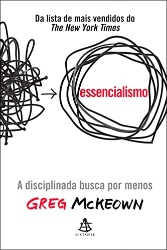

Recomendação de Livros para Mudar o Pensamento e Ser uma Pessoa de Sucesso
Quantas vezes nos encontramos em uma situação na qual queremos mudança? Porém, não damos o pontapé inicial
para
que essa mudança aconteça!
Pensando nisso, recomendarei 5 livros que treinam nossa mente, que mudam nossos hábitos, nos fazem dar esse
pontapé e nos fazem sair da "Zona de Conforto".
Muitas pessoas têm consciência de que precisam assumir as rédeas da própria vida, porém não sabem como fazer
isso na prática.
Este livro traz ao leitor o conceito de autorresponsabilidade. Trata-se de um manual que apresenta a
metodologia das 6 leis para a conquista da autorresponsabilidade, de modo que o leitor assuma o comando de
sua vida.
Aplicando esse conceito, você será capaz de levar alta performance à vida pessoal e profissional, saindo de
um estado não satisfatório para uma vida de abundância e de sucesso.
Se as suas finanças andam na corda bamba, talvez esteja na hora de você refletir sobre o que T. Harv Eker
chama de "o seu modelo de dinheiro" – um conjunto de crenças que cada um de nós alimenta desde a infância e
que molda o nosso destino financeiro, quase sempre nos levando para uma situação difícil.
Nesse livro, Eker mostra como substituir uma mentalidade destrutiva – que você talvez nem perceba que tem –
pelos "arquivos de riqueza", 17 modos de pensar e agir que distinguem os ricos das demais pessoas.

Se você se sente sobrecarregado e ao mesmo tempo subutilizado, ocupado, mas pouco produtivo, e se o seu tempo
parece servir apenas aos interesses dos outros, você precisa conhecer o essencialismo.
O essencialismo é mais do que uma estratégia de gestão de tempo ou uma técnica de produtividade. Trata-se de
um método para identificar o que é vital e eliminar todo o resto, para que possamos dar a maior contribuição
possível àquilo que realmente importa.
Quando tentamos fazer tudo e ter tudo, realizamos concessões que nos afastam da nossa meta. Se não decidimos
onde devemos concentrar nosso tempo e nossa energia, outras pessoas – chefes, colegas, clientes e até a
família – decidem por nós, e logo perdemos de vista tudo o que é significativo.
Neste livro, Greg McKeown mostra que, para equilibrar trabalho e vida pessoal, não basta recusar
solicitações aleatoriamente: é preciso eliminar o que não é essencial e se livrar de desperdícios de tempo.
Devemos aprender a reduzir, simplificar e manter o foco em nossos objetivos.
Quando realizamos tarefas que não aproveitam nossos talentos e assumimos compromissos só para agradar aos
outros, abrimos mão do nosso poder de escolha. O essencialista toma as próprias decisões – e só entra em
ação se puder fazer a diferença.
Ao longo dos séculos, os fragmentos de um Grande Segredo estiveram presentes nas tradições orais, na
literatura, nas religiões e nas correntes filosóficas da humanidade. Agora, pela primeira vez, todas as
peças do Segredo foram reunidas em uma revelação extraordinária, capaz de transformar a vida de todos os que
a vivenciarem.
Nesse livro, você aprenderá a utilizar O Segredo em todos os elementos da sua vida – dinheiro, saúde,
relacionamentos, felicidade – e em cada uma de suas interações com o mundo. Começará a entender o poder
oculto que existe dentro de você, e esta revelação trará alegria para cada aspecto da sua vida.
O Segredo contém a sabedoria de mestres da atualidade – homens e mulheres que o utilizaram para alcançar
saúde, riqueza e felicidade. Suas histórias revelam como, ao aplicarem o conhecimento do Segredo, eles
venceram doenças, obtiveram grande riqueza, superaram obstáculos e alcançaram o que muitos considerariam
impossível.
O 9º livro mais vendido de todos os tempos, que influencia líderes e empreededores em todo o mundo, agora em
uma edição especial atualizada para o século XXI. O clássico best-seller sobre o sucesso agora anotado e
acrescido de exemplos modernos, comprovando que a
filosofia da realização pessoal de Napoleon Hill permanece atual e ainda orienta aqueles que são
bem-sucedidos. Um livro que vai mudar não só o que você pensa, vai mudar o modo como você pensa.